Christian Alex
UX/UI Designer
This project is a digital product that works as a hub for animal adoption NGOs, enabling listings, veterinary follow-up, and a data dashboard for NGOs. It was developed as a study project through a design challenge page focused on UX and UI.
Goal 1: Propose a digital product that increases NGOs' adoption rates
Goal 2: Make the adoption process faster
Goal 3: Create an up-to-date report on the rescued animal’s health
Goal 4: Give NGOs more visibility
The five steps below were used to develop the project.
Understand
Analyze
Create
Prototype
Validate
Using a CSD Matrix, I was able to map how much I knew about the topic, my view on adoption, and how NGO adoption processes work.
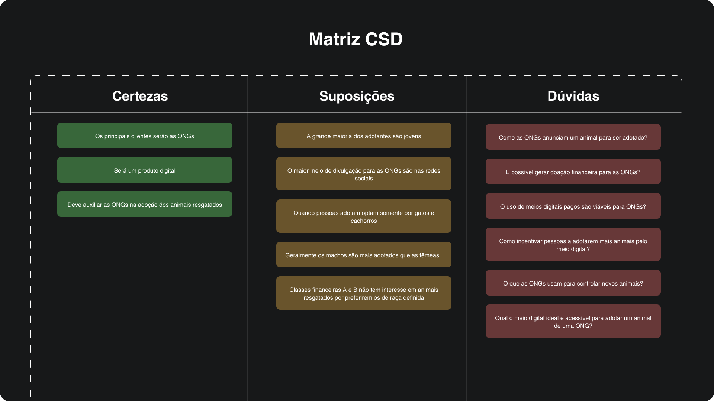The questions below guided the research (which was conducted only as desk research due to the short development timeframe of the challenge).
- What are the biggest needs of NGOs focused on animal rescue?
- What is done when an NGO has no visibility?
- What digital channels currently exist for adoptions by NGOs or veterinary clinics?
- Which social groups adopt animals most often?
- Which diseases most affect rescued animals?
- How are treatments performed for rescued animals?
To answer the questions above, desk research was used in order to meet the challenge deadline.
Mind Map technique, used to visually organize the information considered in this context.
As a result of the research, information was found based on the questions raised. The goal of this technique is to gather information from the internet, books, articles, and publications with relevant content for the project. It also helps organize information and generate important insights.
What are the biggest needs of NGOs focused on animal rescue?
Source:
https://love.doghero.com.br/dicas/ong-de-animais/
https://www.suipa.org.br/index.asp?pg=comoajudar.asp
https://vereadorafernandamoreno.com.br/como-posso-ajudar-ongs-e-protetores-de-animais/
What digital channels currently exist for adoptions by NGOs or veterinary clinics?
There is a wide variety of adoption forms. However, as part of protocol, identification documents, proof of residence, and adoption fees are requested.
Examples of current online adoption portals
Which diseases most affect rescued animals?
Nascimento e Marisco, 2018
What is done when an NGO has no visibility
Among the options for gaining visibility, the least bureaucratic ones (such as the internet) have high engagement potential. In addition, having a defined marketing strategy and knowledge of tools to boost social media are commonly recommended.
Fonte:
https://www.portaldoimpacto.com/por-que-a-sua-ong-deveria-saber-mais-sobre-marketing-de-causa
Which social groups adopt animals most often?
According to a survey by PoderData (2020) with 2,500 participants, the following data was found:
Who most supports adoption and opposes buying pets:
Women (65%);
Ages 16 to 24 (70%);
With completed elementary education (62%);
Without fixed income (68%);
Who most believes people should not stop buying dogs and cats:
Men (25%);
De 16 à 24 anos (25%);
With completed higher education (33%);
Earning from 5 to 10 minimum wages (49%);
Source:
https://www.poder360.com.br/brasil/59-dos-brasileiros-dizem-ser-melhor-adotar-pets-abandonados-do-que-comprar/
How is treatment carried out for rescued animals?
Artigo Petz, 2019
Insights
It is important to inform potential adopters about diseases that street animals can transmit to humans, to raise awareness about preventive care and hygiene.
The adoption process usually involves documentation and an adoption fee, which can be a barrier for some people. This process needs to be simplified to make adoption easier.
Financial resources, veterinary support, shelters, food, volunteers, outreach, and medicine are the main resources NGOs need to rescue and care for animals.
The internet is one of the most effective ways for NGOs to gain visibility and engagement. It is important to have a marketing strategy and knowledge of social media boosting tools.
Young women with completed elementary education and no fixed income are the group that most supports adoption and opposes buying pets.
It is important to guide adopters about the health condition of rescued animals and the need for a medical evaluation before bathing and grooming.
Information Taxonomy
Awareness of diseases transmitted by street animals
Simplification of the adoption process
Resources required by NGOs
Marketing and visibility strategy
Profile of adoption supporters and pet buyers
Guidance on rescued animals' health status and care before bathing and grooming.
By aligning the research results with the goals defined at the beginning of the project, it was possible to create requirements that serve as a basis to evaluate the generated ideas and how each one meets those requirements. Below are some ideas generated through brainstorming.
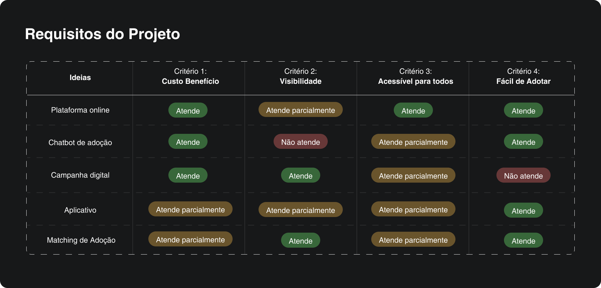Chosen idea details

It will be an online platform service for NGOs to list their animals, where users can choose from an animal database.

There will be two types of users who access the platform: the NGO and the adopter. It must cover NGO registration, animal listings, and the adopter stage during adoption.
The tool will list the resources used to support adoption and evidence that proves the actions took place.
Service Blueprint
Its objective is to understand and visualize the entire user experience regarding a specific product or service. Because it can be used by teams, it also aligns everyone involved, making it possible to identify problems or opportunities in the project.
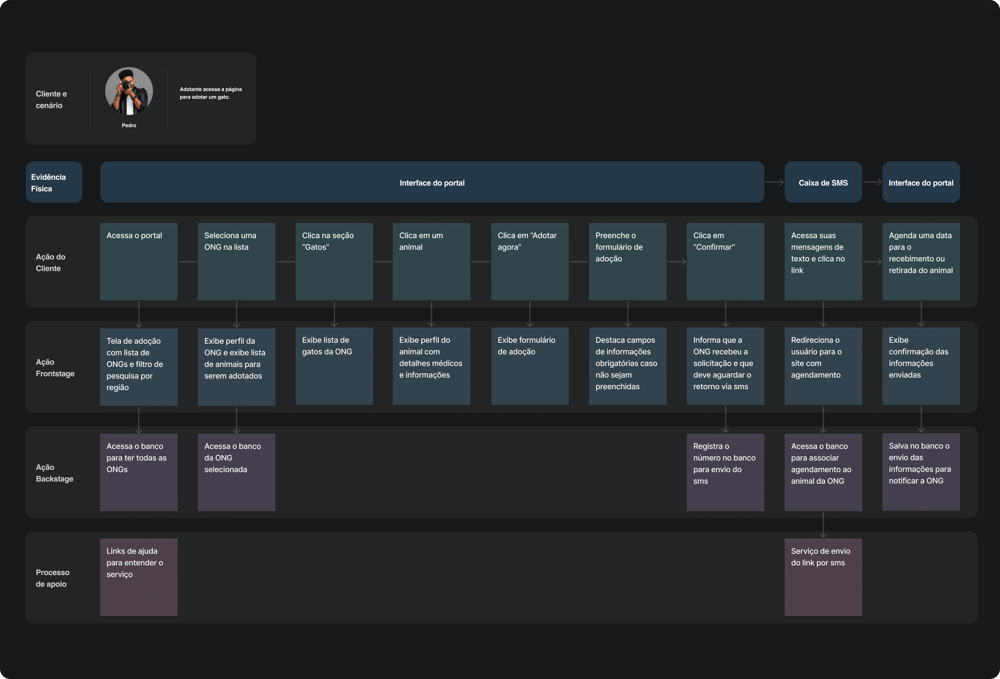Based on the Adopter persona
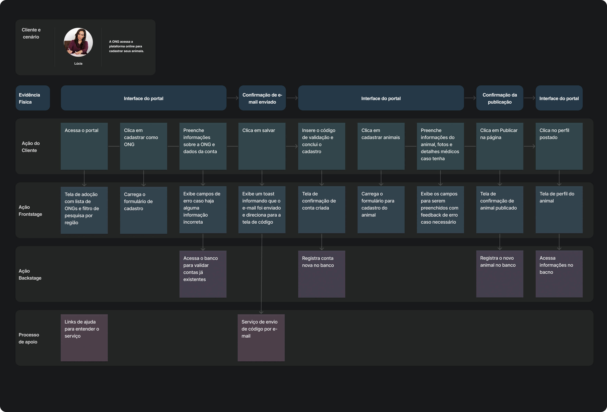Based on the NGO Representative persona
User Stories
As an NGO manager
I want to access the platform to register
So that
I can have an account and use its features
As an NGO manager
I want to register an animal with basic information
Para que
I can add animals that need rescue to my profile
As an adopter
I want to access the platform to adopt an animal
Para que
I want to access the platform to register
As an adopter
I want to be able to select a cat profile to adopt from an NGO
Para que
I can start the adoption process
Sitemap
Before moving on to wireframes, I created a simple sitemap to illustrate how the platform will be structured.
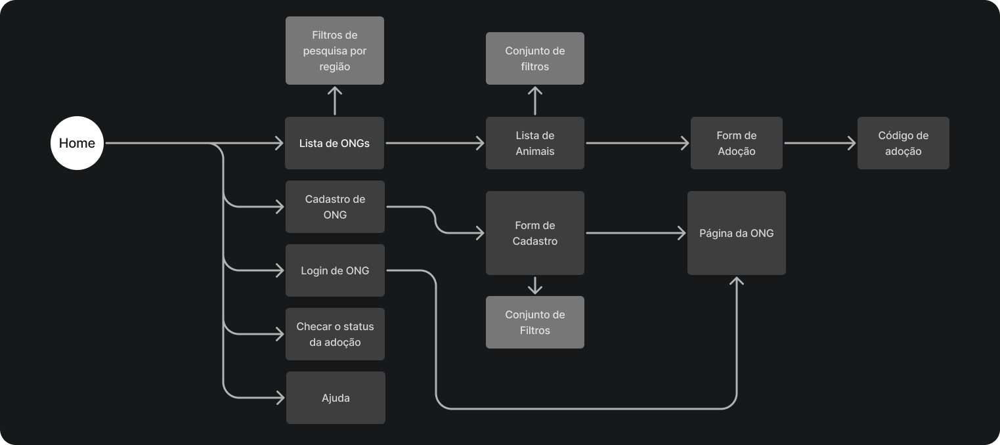Fluxos
Register an NGO on the platform; Register a new animal;
Adopter accesses the platform; Adopter adopts an animal on the platform;
Check adoption status;
Below are some flows built to create the wireframes.
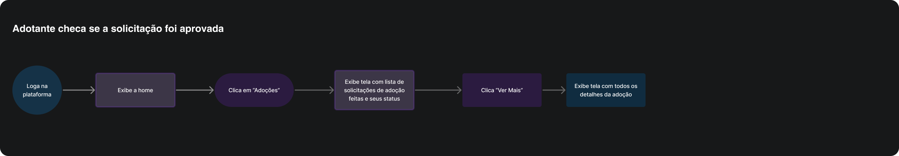 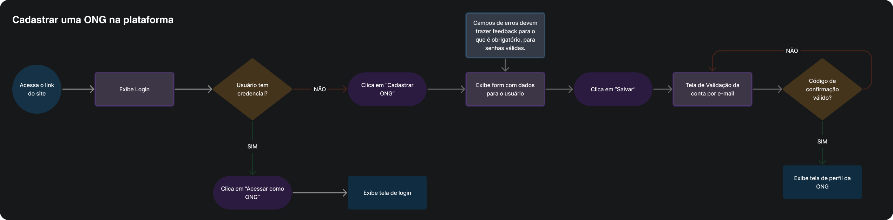 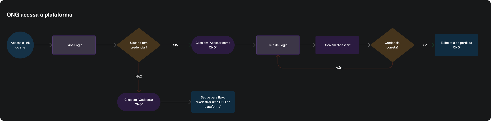 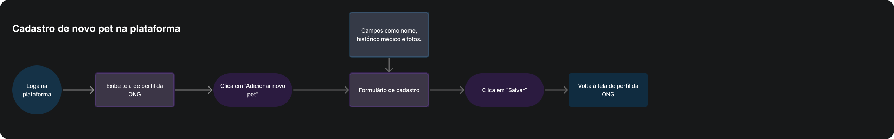.png) 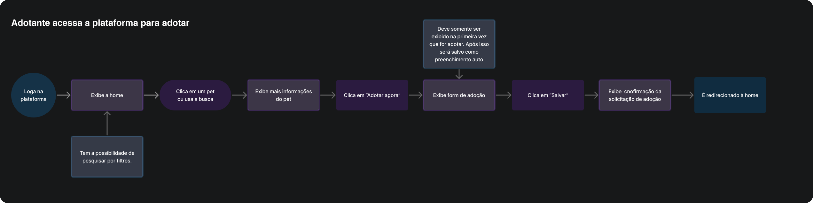
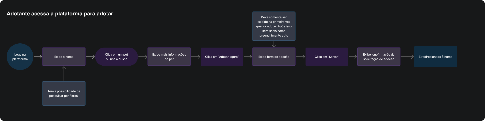
Wireframes
The mobile-first concept was applied, enabling a mobile-oriented view of the site before considering larger sizes. This helps organize elements and improve adaptation.
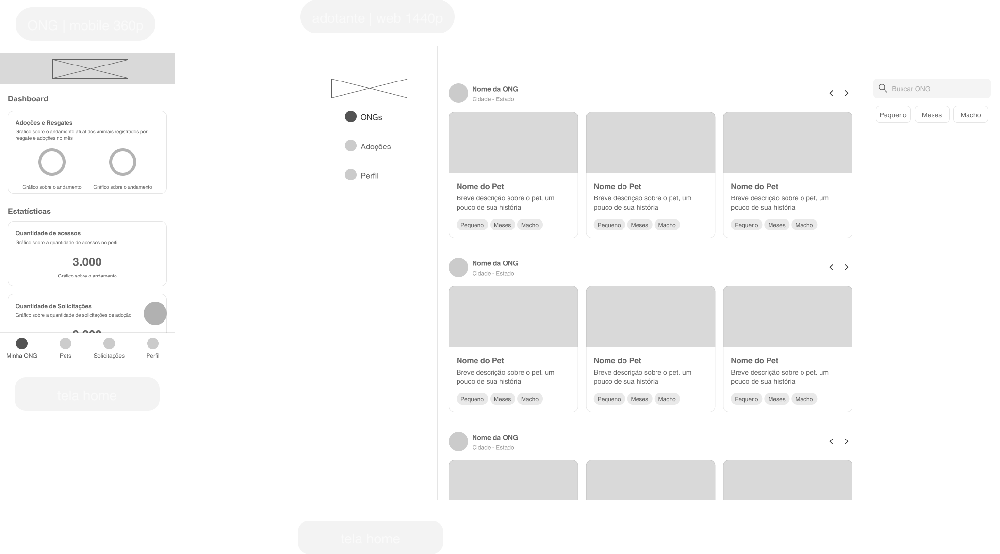 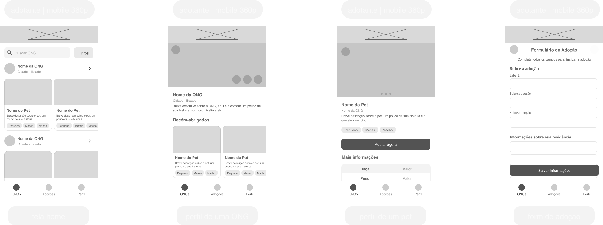 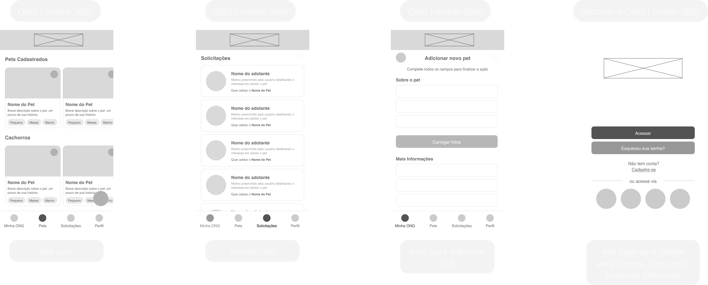Painel Semântico
Based on the concepts explored in the mind map technique, a semantic panel was created for the interface to guide how visual elements and colors should behave in the project. The concept keywords are: love, lightness, and comfort.
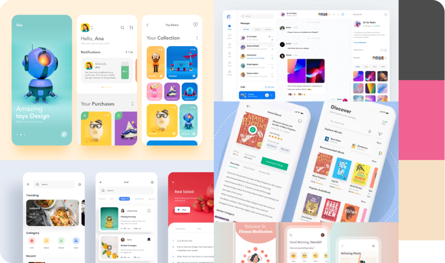Pink tones will be used as the main colors, reinforcing the concepts of love and comfort. Lightness in the interface makes navigation more fluid, as it allows action elements to guide user decisions, while white and gray support this navigation. Visual elements and components should also have rounded edges, reducing the “formal” look of the interface and supporting interaction with the content inside these components.
Branding
According to the elements previously defined, a brand was created to fit the context. See more details below:
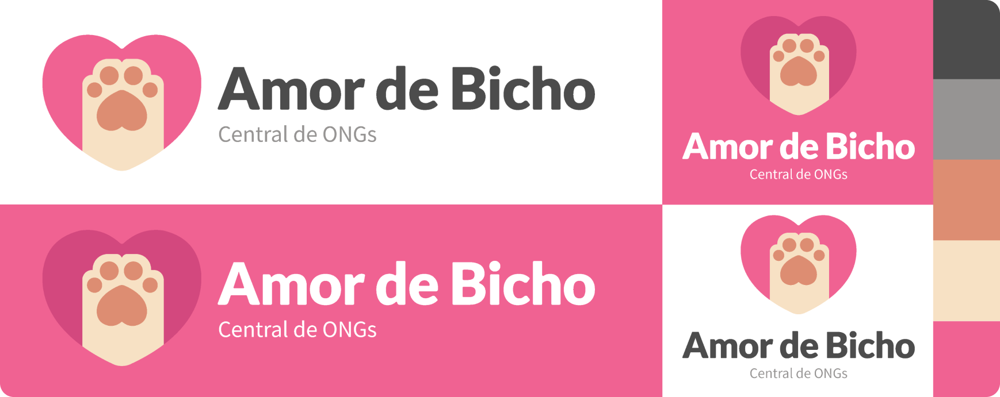Styleguide
A style guide was created to standardize the system. In the project handoff stage, it is also very useful for the front-end developer, who can then create a standardized style library.
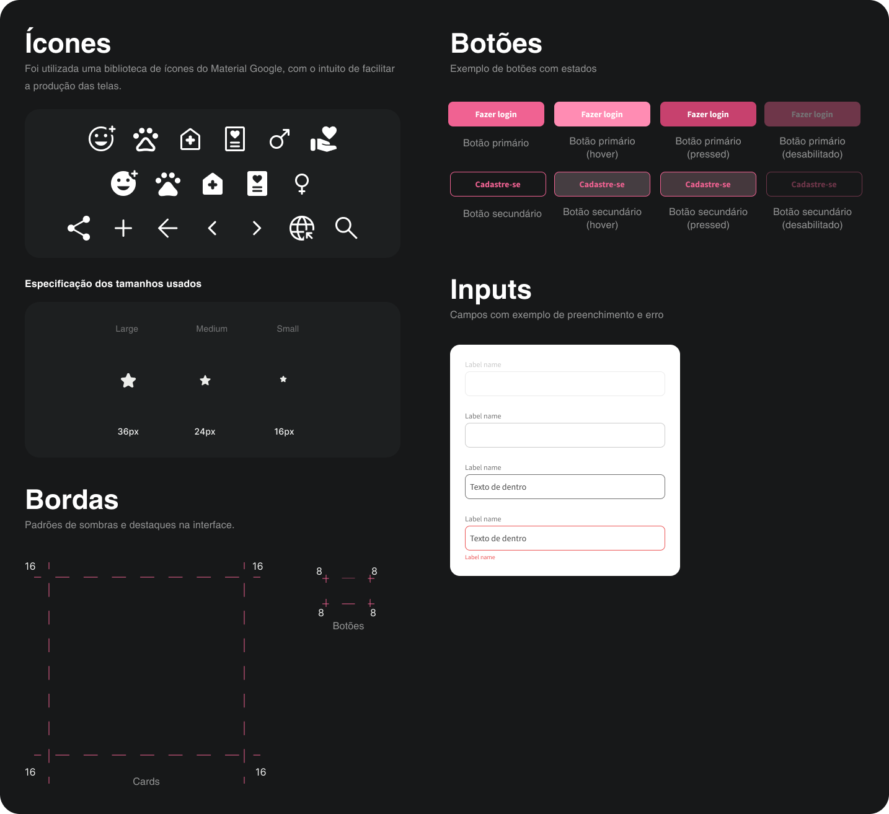
Adotante acessa a plataforma para adotar um pet
If you want to access the navigable prototype of these screens, click here.
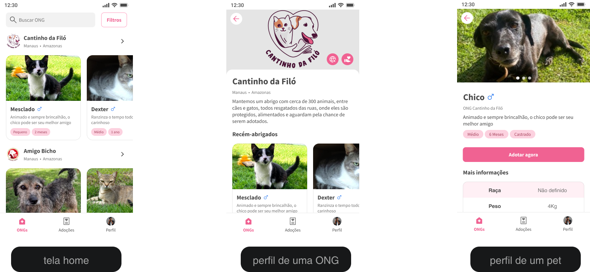 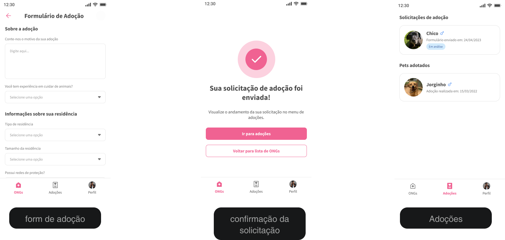NGO registers a new animal on its page
If you want to access the navigable prototype of these screens, click here.
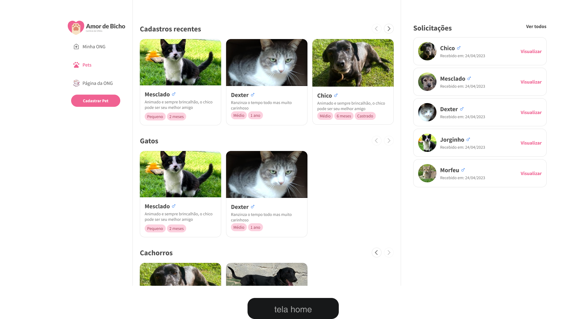Due to the short delivery timeline, validation was conducted only for the “Adopter” persona, leaving future development open for applying the test to the “NGO” audience.
Form and interaction with prototype
The test was conducted through an interactive prototype in Figma, onde o usuário realizou algumas atividades e registrou seu desempenho respondendo ao form.
Example of the form used
Resultados
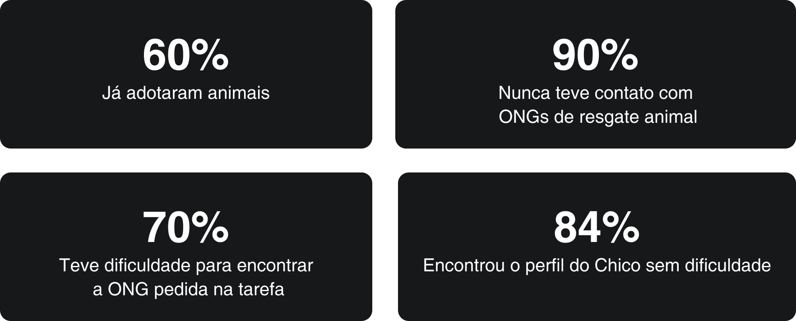I had the opportunity to run the research in person with one participant. By observing them, it was possible to notice key points.
The test was biased by placing “Cantinho da Filó” as the first item in the list;
The form field caused concern for the user because it went beyond the screen’s visible area, suggesting the form was longer than it actually was;
The adoption feedback screen could be more interactive;
Section indicators
A section component was added. Its purpose is to reduce the amount of content shown to the user and provide better visibility of which information is being filled out through segmentation. See the before and after below:
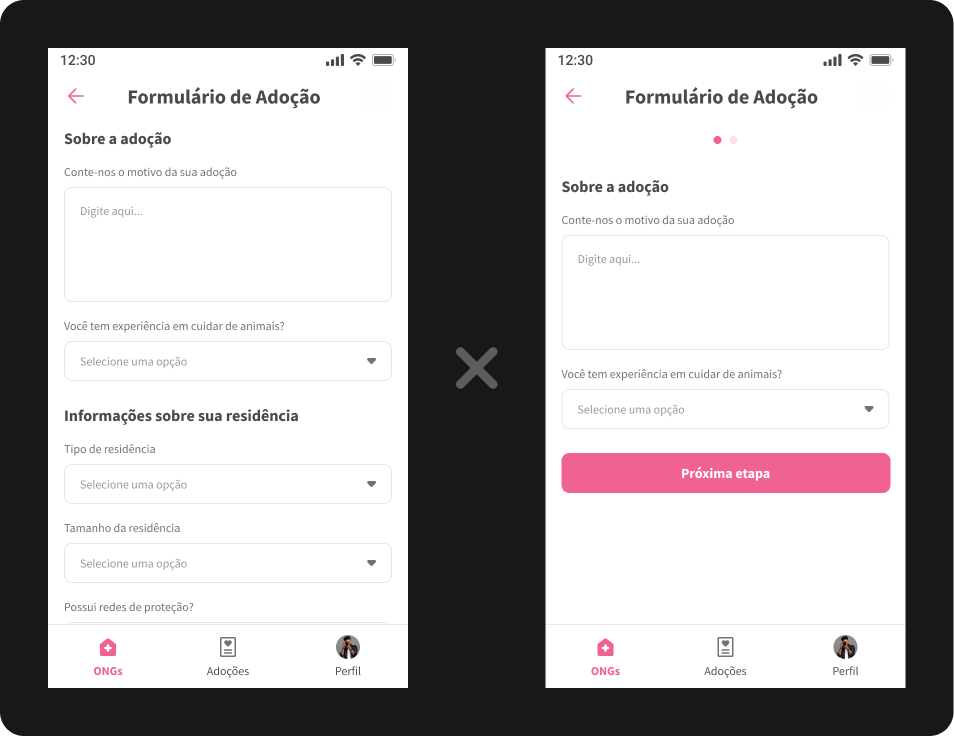Request feedback
By adding more personality to the feedback screen, the user now sees the pet they are adopting, making the process more emotionally engaging. See the before and after below:
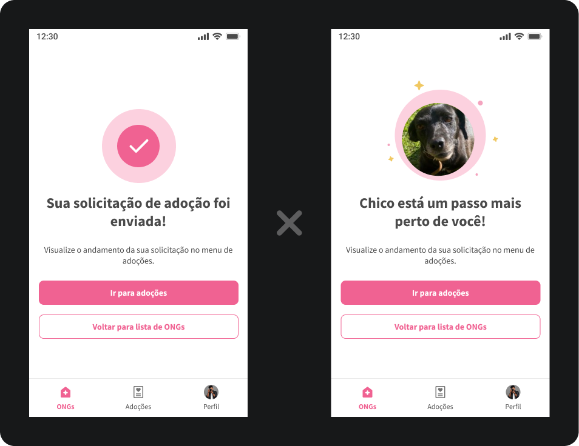See other projects

Uni
University Project
A digital solution that helps teenagers with MDD (Major Depressive Disorder), combined with emotional design concepts, aims to encourage users to practice cognitive activities and social interactions.

Super Tutoring
Volunteer Project
A tutoring system for students, tutors, coordinators, and professors whose goal is to provide an online platform to facilitate communication and the monitoring of tutoring activities at a university.